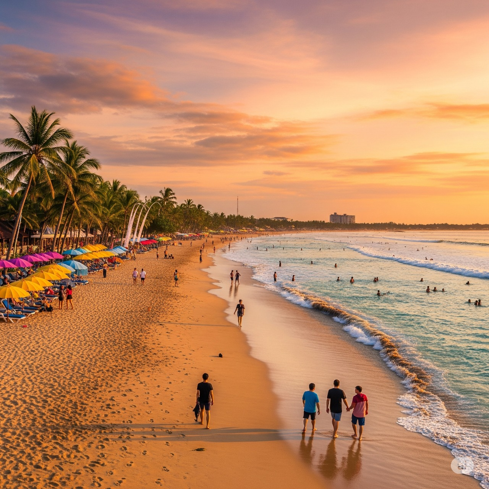
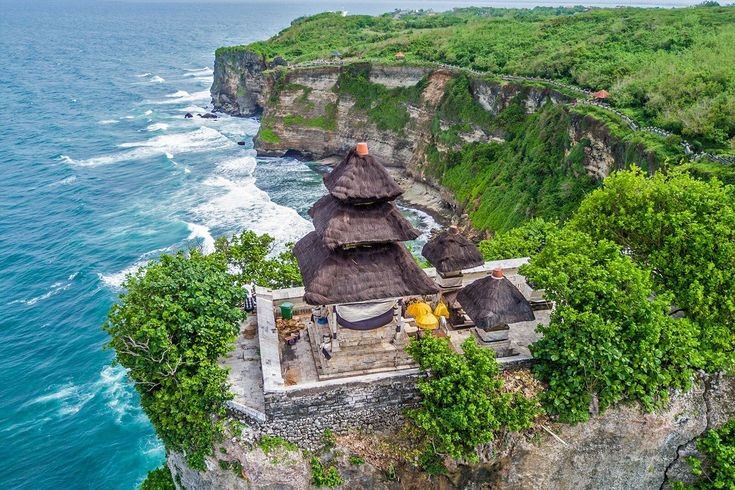
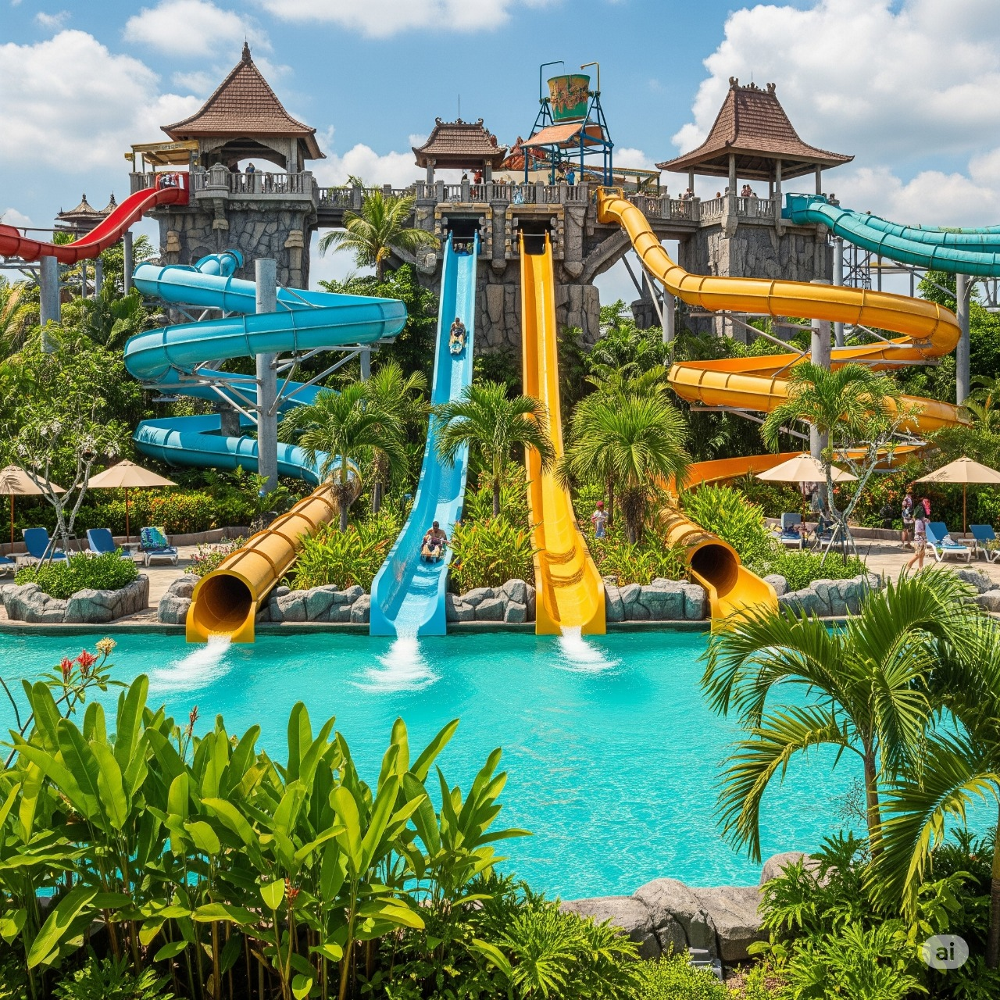

Destinasi Wisata Badung

Pantai Kuta
Pantai legendaris dengan ombak yang cocok untuk berselancar, sunset menakjubkan, dan kehidupan malam yang semarak.
Lihat Detail →

Pura Uluwatu
Pura laut megah di tebing tinggi dengan pemandangan Samudera Hindia dan pertunjukan Kecak saat matahari terbenam.
Lihat Detail →

Waterbom Bali
Taman air terbaik di Asia dengan berbagai wahana seru, area relaksasi, dan fasilitas kelas dunia di jantung Kuta.
Lihat Detail →
Pantai Nusa Dua
Pantai berpasir putih dengan ombak tenang, dikelilingi resor mewah dan fasilitas wisata eksklusif.
Lihat Detail →